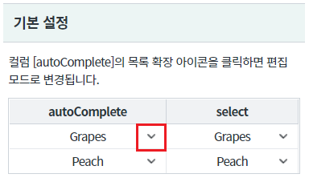
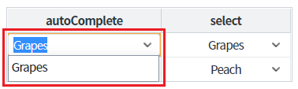
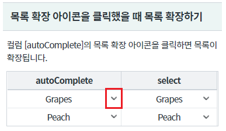
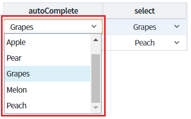
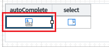
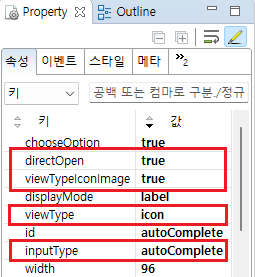
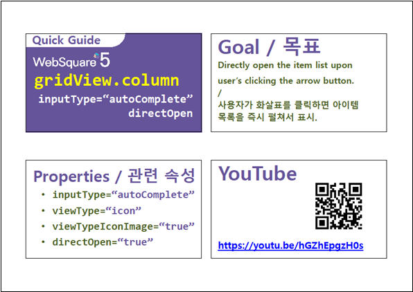

GridView의 inputType이 "autoComplete"인 경우 목록 확장 아이콘을 클릭했을 때 목록이 바로 확장되는 설정 예제입니다.
[기본 설정] inputType이 "autoComplete"인 경우 목록 확장 아이콘을 클릭했을 때 편집 모드로 변경
inputType이 "autoComplete"인 경우 목록 확장 아이콘을 클릭했을 때 목록이 확장
영역 [기본 설정]의 GridView의 컬럼 [autoComplete]의 목록 확장 아이콘을 클릭합니다.
[브라우저(Chrome) 실행 예시]

셀이 편집 모드로 변경되고 value에 해당하는 값이 목록에 출력됩니다.
[브라우저(Chrome) 실행 예시]

영역 [목록 확장 아이콘을 클릭했을 때 목록 확장하기]의 GridView의 컬럼 [autoComplete]의 목록 확장 아이콘을 클릭합니다.
[브라우저(Chrome) 실행 예시]

셀이 편집 모드로 변경되고 value에 해당하는 값이 목록에 출력됩니다.
[브라우저(Chrome) 실행 예시]

DataList 생성 및 연결은 생략되었습니다.
GridView의 컬럼 속성을 정의합니다.
[필수] viewType="icon" //컬럼의 inputType에 헤당하는 아이콘을 표시.
[필수] directOpen="true" //GridView의 autoComplete에서 화살표 클릭시 아이템 테이블 바로 열리는 기능
[필수] viewTypeIconImage="true" //calendar나 autoComplete의 경우, 아이템 테이블을 열기위한 화살표를 image로 표시할지 여부.
[필수] inputType="autoComplete"
그림 1.웹스퀘어5 SP5 스튜디오의 Design 탭 예시 - 컬럼 선택

그림 2.웹스퀘어5 SP5 스튜디오의 Property View(속성창) 예시

[소스 코드 예시]
<!-- gridView 의 소스 본문 예시 --> <w2:gridView dataList="data:dlt_exam1"> <!-- 중략 --> <w2:gBody id="gBody1" style=""> <w2:row id="row2" style=""> <!-- 중략 --> <w2:column viewType="icon" directOpen="true" viewTypeIconImage="true" inputType="autoComplete" id="autoComplete"> <w2:choices> <w2:itemset nodeset="data:dlt_exam_code"> <w2:label ref="label"></w2:label> <w2:value ref="code"></w2:value> </w2:itemset> </w2:choices> </w2:column> <!-- 중략 --> </w2:row> </w2:gBody> </w2:gridView>
[body column] viewType
[body column] directOpen
[body column] viewTypeIconImage
[body column] inputType
[웹스퀘어5 SP5 개발 가이드] GridView
링크 : https://docs1.inswave.com/sp5_user_guide/86bdcf48029b958b
[웹스퀘어5 SP5 개발 가이드] GridView의 inpuType 종류
링크 : https://docs1.inswave.com/sp5_user_guide/86bdcf48029b958b#e234842b00bfc33a
[웹스퀘어5 SP5 개발 가이드] GridView의 inputType="autoComplete"의 속성 directOpen
링크 : https://docs1.inswave.com/sp5_user_guide/86bdcf48029b958b#9e6eb5c4530a75d7
GridView의 inputType="autoComplete"의 속성 directOpen
링크 : https://youtu.be/hGZhEpgzH0s
